Columns show normalized τ = 0, 0.5, 1; actual time is scaled by T_end. Rows include every algorithm scheduled by the immutable run plan.
| Algorithm / run status | Start (τ=0) | Midpoint (τ=0.5) | End (τ=1) |
|---|---|---|---|
| branch-and-bound run: run_20261012T041943Z__branch-and-bound__minsum__berlin52-3939d9e3cc19-6ce5d7089a__r00__9da39c4a3f7e COMPLETED; feasible=True; verified=True (CERTIFIED_CONTINUOUS); optimality=FEASIBLE | 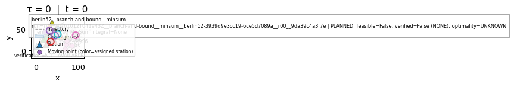 | 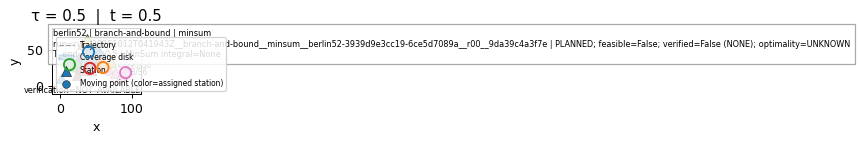 | 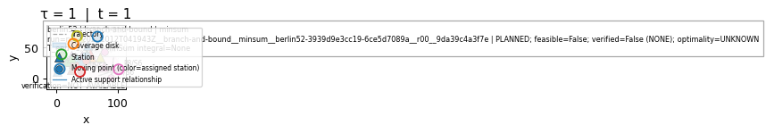 |
| brute-force run: run_20261012T042845Z__brute-force__minsum__berlin52-3939d9e3cc19-6ce5d7089a__r00__44805882d0d7 FAILED; feasible=False; verified=False (NONE); optimality=FAILED | FAILED; feasible=False; verified=False (NONE); optimality=FAILED NO_SOLUTION_ARTIFACT | FAILED; feasible=False; verified=False (NONE); optimality=FAILED NO_SOLUTION_ARTIFACT | FAILED; feasible=False; verified=False (NONE); optimality=FAILED NO_SOLUTION_ARTIFACT |
| genetic run: run_20261012T041943Z__genetic__minsum__berlin52-3939d9e3cc19-6ce5d7089a__r00__2cd868b32654 COMPLETED; feasible=True; verified=True (CERTIFIED_CONTINUOUS); optimality=FEASIBLE | 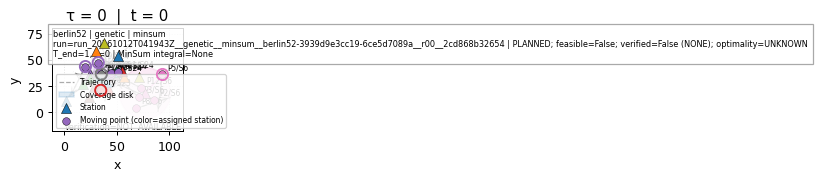 | 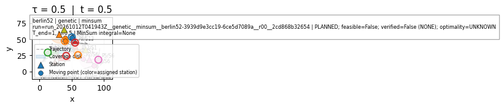 | 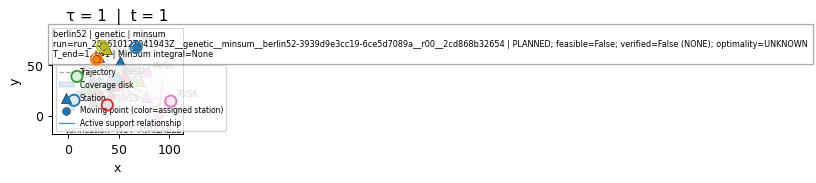 |
| greedy run: run_20261012T041943Z__greedy__minsum__berlin52-3939d9e3cc19-6ce5d7089a__r00__042a8f44c4b8 COMPLETED; feasible=True; verified=True (CERTIFIED_CONTINUOUS); optimality=FEASIBLE | 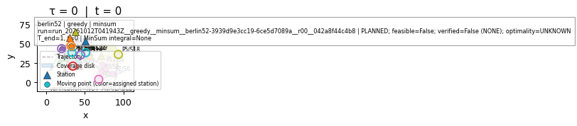 | 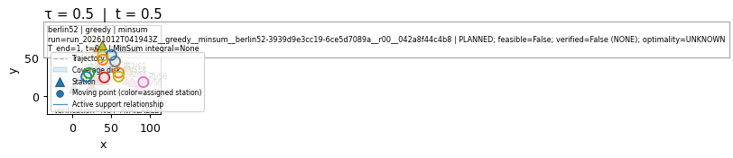 | 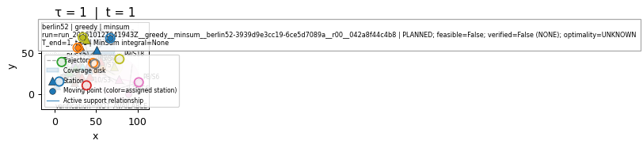 |
| ip-kont run: run_20261012T042845Z__ip-kont__minsum__berlin52-3939d9e3cc19-6ce5d7089a__r00__852246256934 SKIPPED; feasible=False; verified=False (NONE); optimality=UNKNOWN | SKIPPED; feasible=False; verified=False (NONE); optimality=UNKNOWN NO_SOLUTION_ARTIFACT | SKIPPED; feasible=False; verified=False (NONE); optimality=UNKNOWN NO_SOLUTION_ARTIFACT | SKIPPED; feasible=False; verified=False (NONE); optimality=UNKNOWN NO_SOLUTION_ARTIFACT |
| local-search run: run_20261012T041943Z__local-search__minsum__berlin52-3939d9e3cc19-6ce5d7089a__r00__699d047804c4 COMPLETED; feasible=True; verified=True (CERTIFIED_CONTINUOUS); optimality=FEASIBLE | 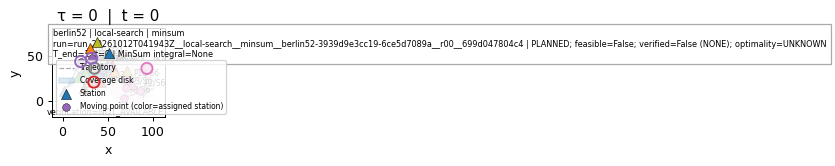 | 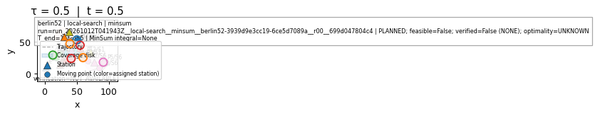 | 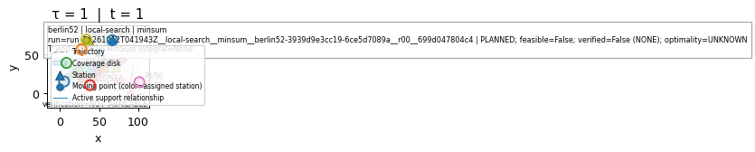 |
| lp-rounding run: run_20261012T041943Z__lp-rounding__minsum__berlin52-3939d9e3cc19-6ce5d7089a__r00__079042715ab4 COMPLETED; feasible=True; verified=True (CERTIFIED_CONTINUOUS); optimality=FEASIBLE | 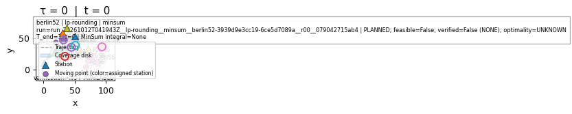 | 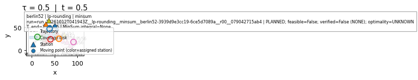 | 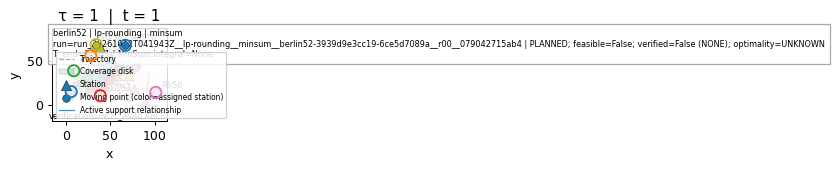 |
| nn run: run_20261012T041943Z__nn__minsum__berlin52-3939d9e3cc19-6ce5d7089a__r00__2c42eafaf561 COMPLETED; feasible=True; verified=True (CERTIFIED_CONTINUOUS); optimality=FEASIBLE | 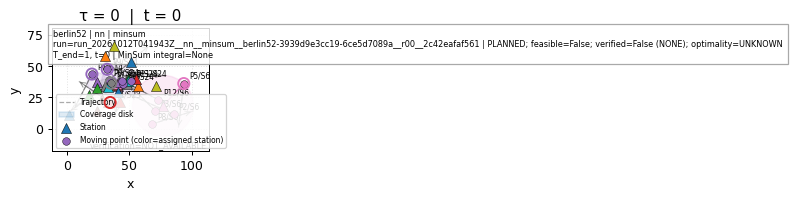 | 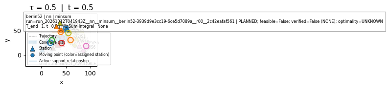 | 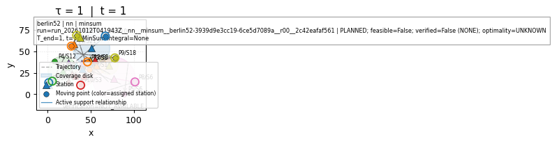 |
| primal-dual run: run_20261012T041943Z__primal-dual__minsum__berlin52-3939d9e3cc19-6ce5d7089a__r00__084a073db85d COMPLETED; feasible=True; verified=True (CERTIFIED_CONTINUOUS); optimality=FEASIBLE | 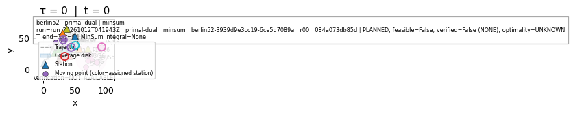 | 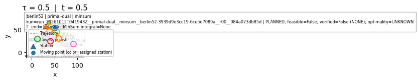 | 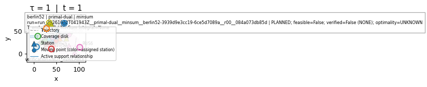 |
| sa run: run_20261012T041943Z__sa__minsum__berlin52-3939d9e3cc19-6ce5d7089a__r00__e92686d333a5 COMPLETED; feasible=True; verified=True (CERTIFIED_CONTINUOUS); optimality=FEASIBLE | 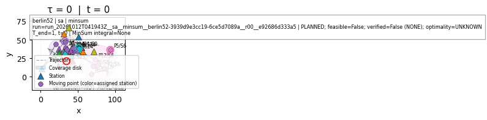 | 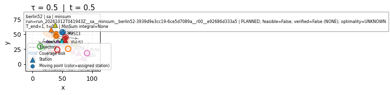 | 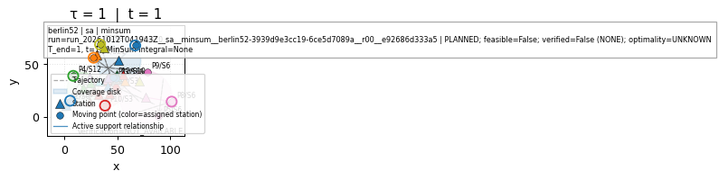 |
| shifting run: run_20261012T041943Z__shifting__minsum__berlin52-3939d9e3cc19-6ce5d7089a__r00__229995532be2 COMPLETED; feasible=True; verified=True (CERTIFIED_CONTINUOUS); optimality=FEASIBLE | 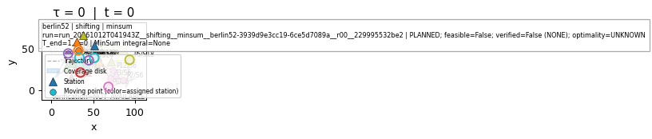 | 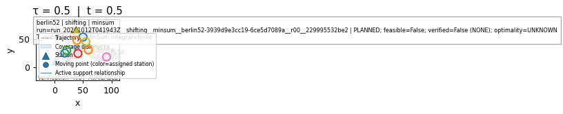 | 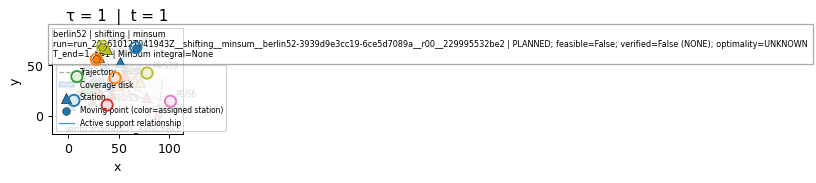 |